Implementation & Results Report
2026-04-09
This project demonstrates the implementation of foundational quantum algorithms using Qiskit. The algorithms showcase near-term quantum optimization tools, advanced search operations, quantum oracles, randomness generation, and key distribution paradigms.
The Variational Quantum Eigensolver (VQE) is a flagship algorithm for noisy intermediate-scale quantum (NISQ) computers, enabling the computation of molecular ground-state energies or the minimum eigenvalue of a Hamiltonian. In this implementation, VQE uses a parameterized quantum circuit as an ansatz to prepare states securely and a classical optimizer (such as COBYLA) to iteratively update the parameters and minimize the expectation value of the target system's energy. It signifies a powerful hybrid approach where classical computation acts synergistically with quantum operations.
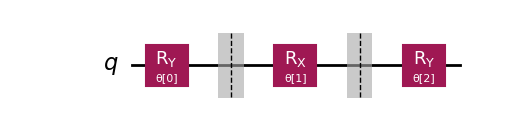
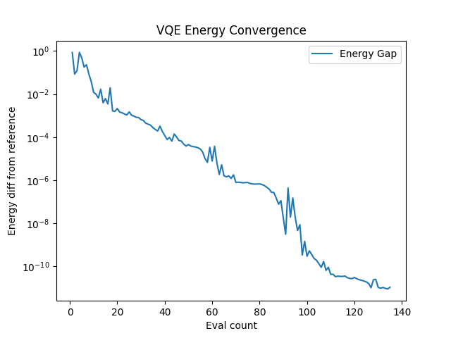
Demonstrates exponential convergence characteristics towards the exact minimum eigenvalue of the Hamiltonian.
Grover's algorithm tackles the fundamental problem of searching an unsorted database of N items to find a specific target item. Classically, this requires checking N/2 items on average and N items in the worst case, scaling as O(N). Grover's algorithm offers a quadratic speedup, finding the item in roughly (π/4)√N steps, or O(√N). It works by initializing a superposition of all possible states and iteratively applying an oracle (which marks the target) and a diffusion operator (which reflects amplitudes about the mean). This process amplifies the probability amplitude of the target state so that measurement yields the correct answer with high probability.
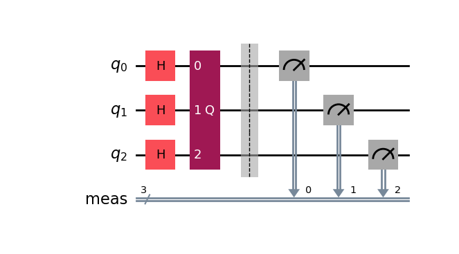
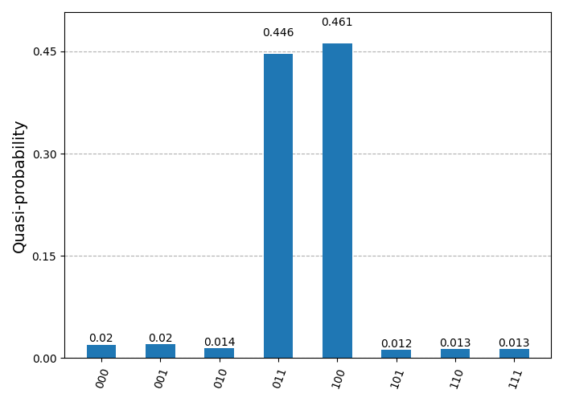
The target state's probability is significantly amplified, appearing as the dominant peak in the histogram.
Simon's algorithm provides one of the first concrete examples of an exponential speedup of a quantum algorithm over any deterministic classical algorithm. It addresses a specific black-box problem: given a function f(x) defined on n-bit strings such that f(x) = f(y) if and only if x = y or x ⊕ y = s, the goal is to identify the hidden period string s. While a classical computer would need to check exponentially many inputs to find a collision, Simon's algorithm uses quantum interference to find s with sophisticated efficiency, scaling polynomially with the number of qubits. This establishes oracles based on the Hidden Subgroup Problem as a powerful domain for quantum advantage.
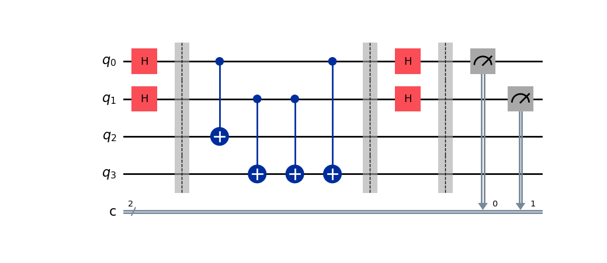
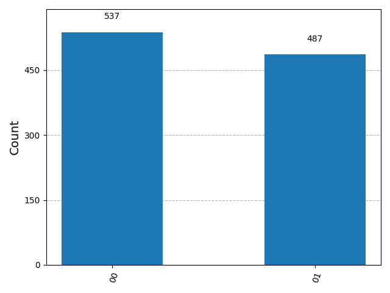
The measurement results yield bitstrings z such that z·s = 0 (mod 2). By collecting enough linear independent samples, s is reconstructed.
The Deutsch-Jozsa algorithm was the first to demonstrate a deterministic separation between quantum and classical computers. It solves a problem where we are given an oracle computing a boolean function f: {0,1}^n → {0,1} which is guaranteed to be either constant (same output for all inputs) or balanced (returns 0 for half the inputs and 1 for the other half). To determine which property the function holds, a classical algorithm requires 2^(n-1) + 1 queries in the worst case. Remarkably, the Deutsch-Jozsa algorithm solves this with a single quantum query by exploiting massive quantum parallelism and interference to distinguish the global property of the function.
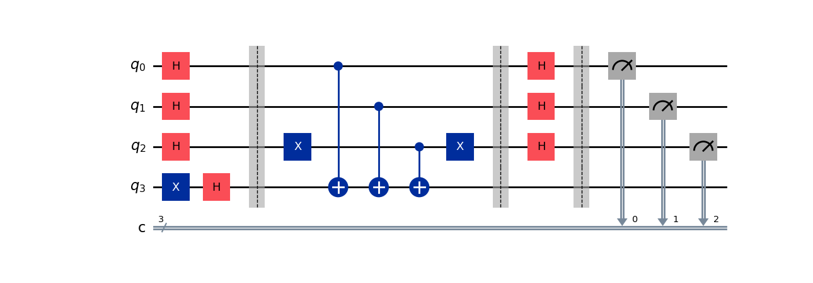
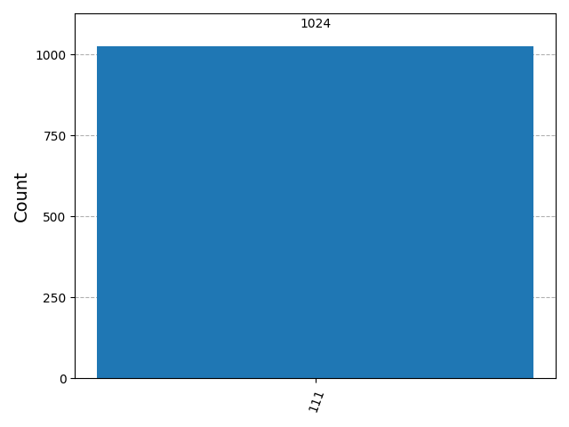
A result of '00...0' definitively proves the function is Constant. Any other result proves it is Balanced.
Unlike classical pseudo-random number generators (PRNGs) which rely on deterministic algorithms and seeds, Quantum Random Number Generators (QRNGs) operate based on the fundamental principles of quantum mechanics. By placing a qubit into a perfect superposition state (using a Hadamard gate) and then measuring it, the outcome is fundamentally indeterminate and truly random. This implementation utilizes this core property to generate sequences of unbiased random numbers, essential for cryptographic keys and high-fidelity simulations where true entropy is required.
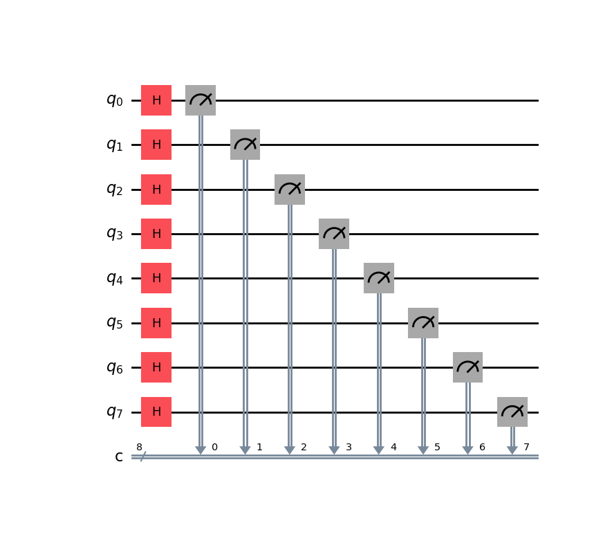
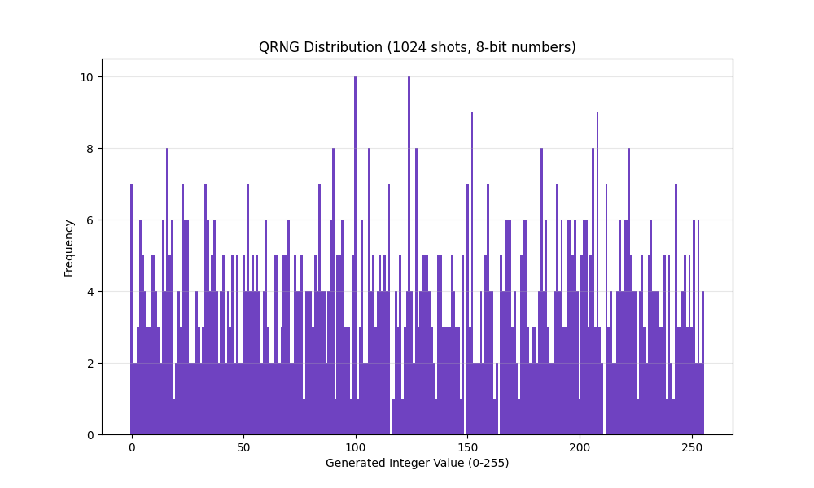
The resulting integer distribution over many shots approaches a perfect uniform distribution.
The BB84 protocol is the first quantum cryptography protocol, developed by Bennett and Brassard in 1984. It allows two parties, Alice and Bob, to securely establish a shared secret key over an insecure channel. The security relies on the No-Cloning Theorem and the fact that measuring a quantum state generally disturbs it. In this simulation, Alice encodes bits in random bases (Rectilinear or Diagonal), and Bob measures them in random bases. After sifting (discarding bits where bases mismatched), they obtain a shared key. Any eavesdropper (Eve) trying to intercept the key introduces detectable errors, guaranteeing unconditional security.
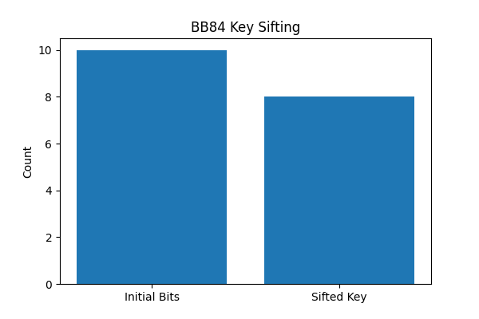
The simulation compares the raw generated bits against the final distilled key, typically keeping ~50% of bits.